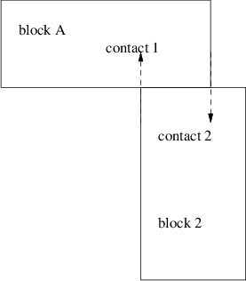
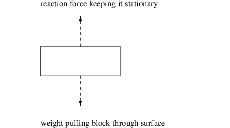
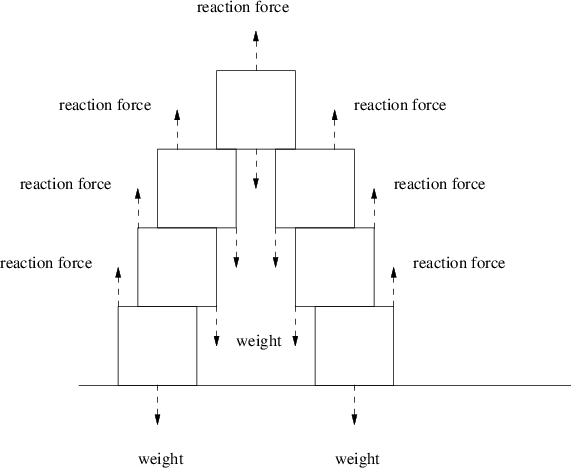

repeat
calculate the separating velocity of each contact, keeping track
of the contact with the lowest value
if the lowest separating velocity is greater than or equal to zero
then
return
else
process the collision response algorithm for the contact with
the lowest separating velocity (most negative)
fi
until max iterations have occurred
This document was produced using groff-1.22.